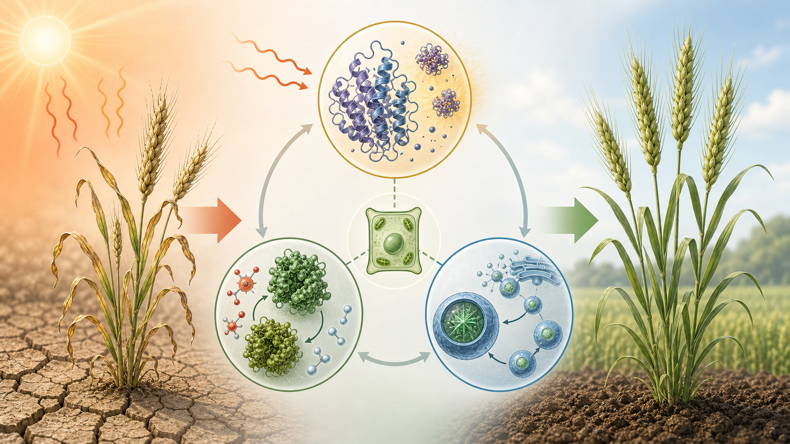
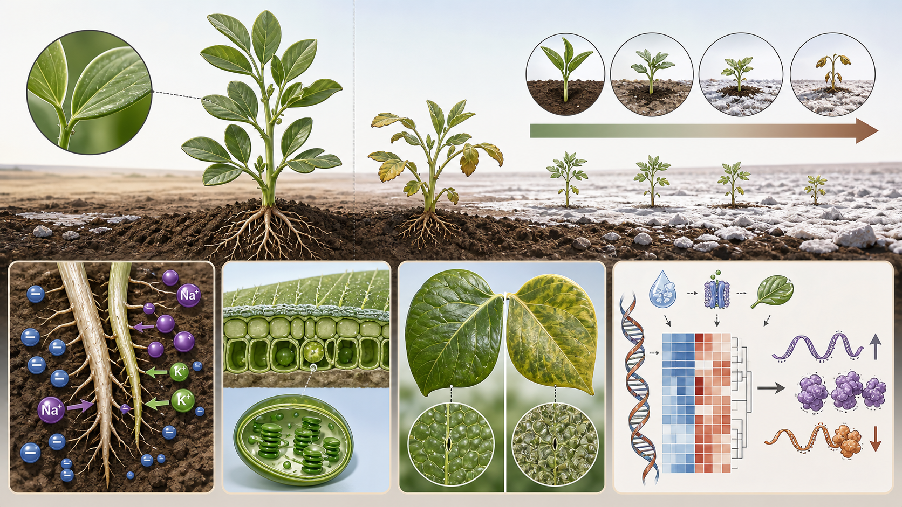
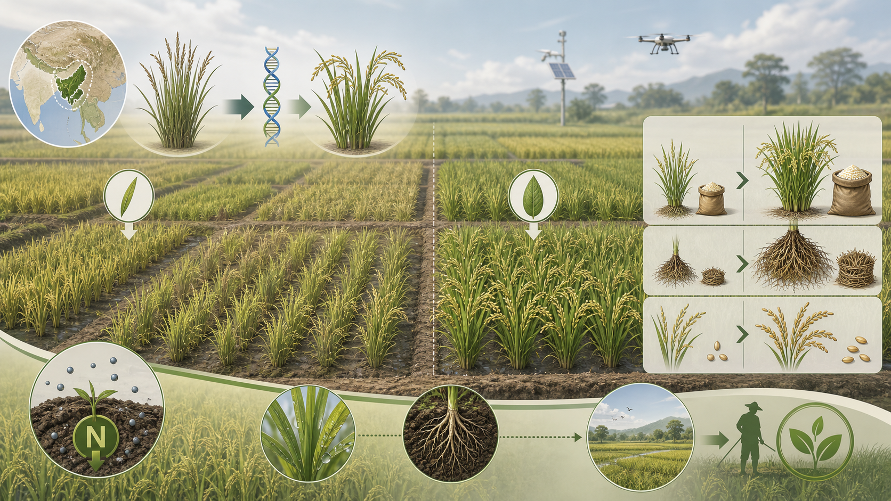
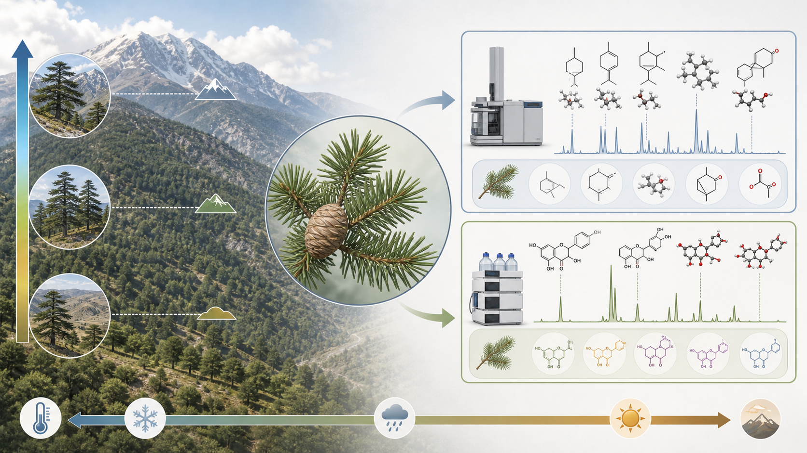
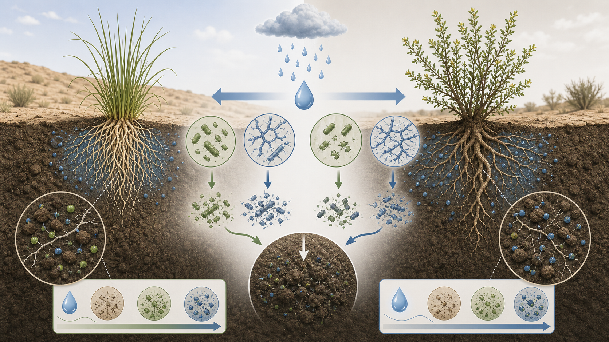
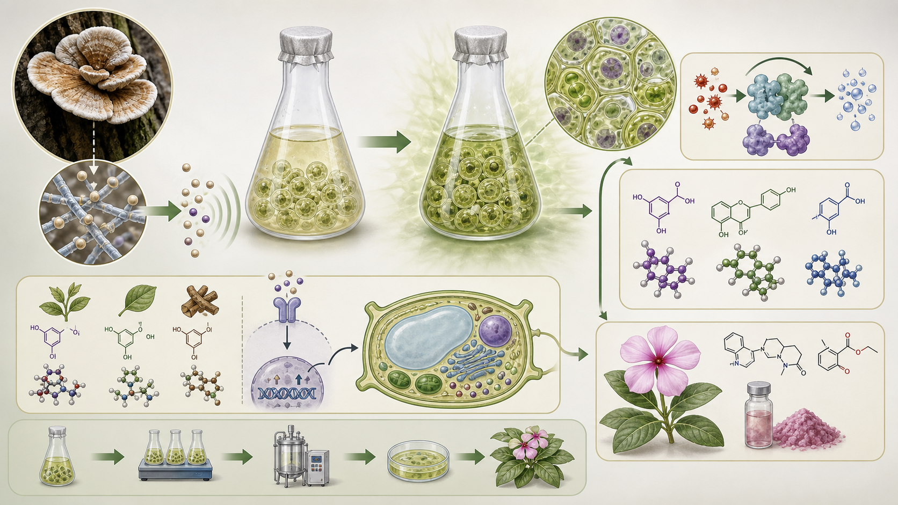
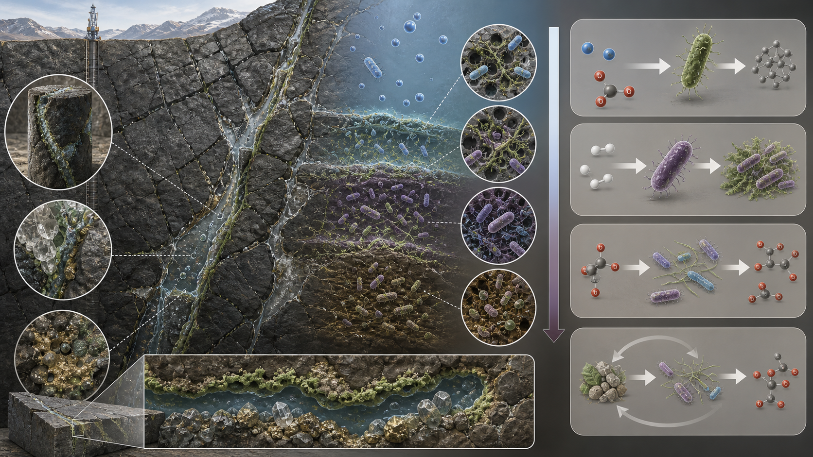
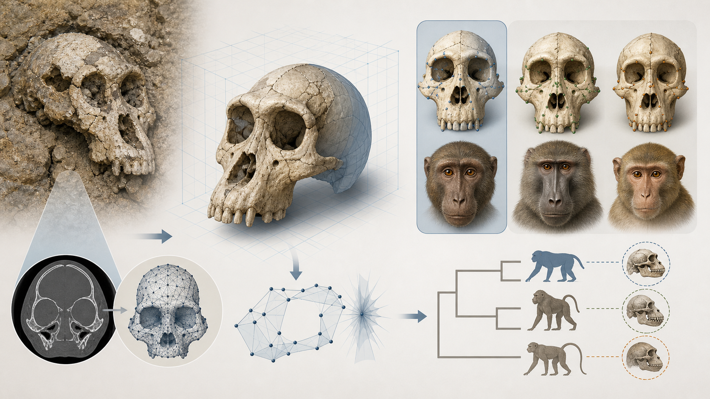
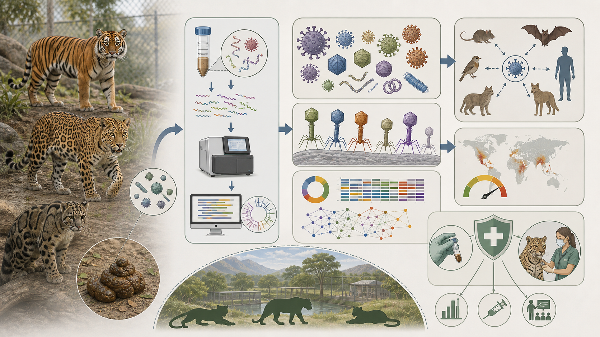
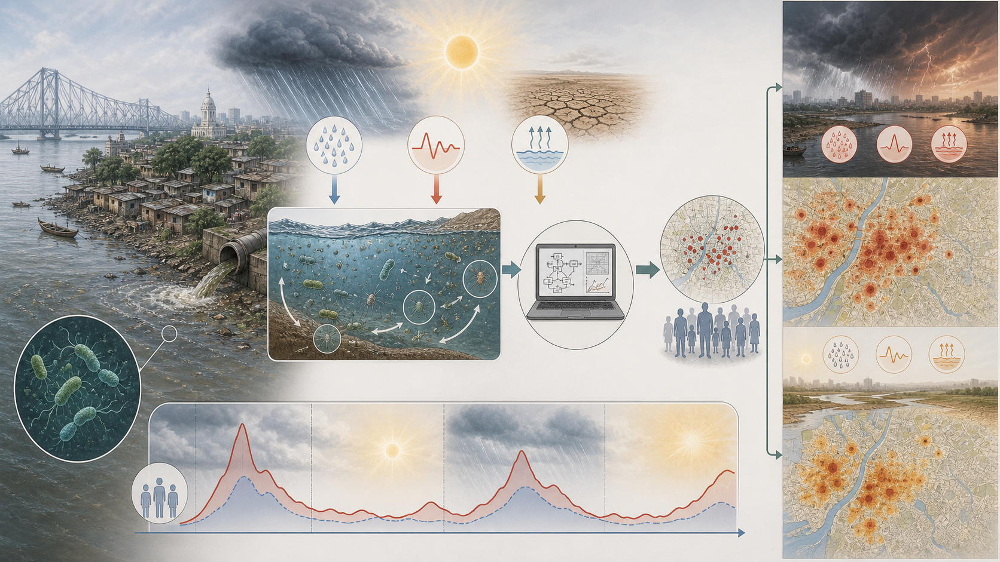

判定方針と限界
Crossrefの発行日は多くの出版社で日付粒度で、時刻までは公開されません。そのため、2026-05-10..2026-05-11に発行日が付いたjournal articleを対象に取得し、生態学・進化生物学・関連する環境生物学として採録すべき原著研究を選びました。厳密な秒単位の24時間保証ではなく、公開日ベースの最新性判定です。
医学・工学・材料・社会科学・純粋な臨床研究など、主題が生態・進化から外れる論文は除外しました。グラフィカルアブストは原著図の転載ではなく、論文タイトル・抄録・メタデータからChatGPT Image 2.0で生成したオリジナルPNG概念図です。
Crossref取得データ生成時刻: 2026-05-11T00:24:58.406475+00:00。採録論文10件はすべてChromeで出版社ページを開き、Abstractとページ内見出しを確認してから概要・新規性を作成しました。Nature Biodiversityは、Nature Portfolio上の対応誌として確認できる npj Biodiversity （ISSN 2731-4243）で検索しました。
1. 論文詳細
#01 / Scientific Reports
熱ショックタンパク質・抗酸化系・ペルオキシソーム新生の連携が小麦の高温耐性を支える
Crosstalk of heat shock proteins and antioxidants with peroxisome biogenesis supports wheat thermotolerance
著者: J. E. Shenoda、Marwa N. M. E. Sanad、Aida A. Rizkalla、Mona H. Hussein、S. El-Assal
10.1038/s41598-026-48451-0
掲載誌 Scientific Reports
発行日 2026-05-10
出版社 Springer Science and Business Media LLC
種別 journal-article

ChatGPT Image 2.0で生成したオリジナルPNGグラフィカルアブスト。原著図・写真は転載していません。
概要と学術的新規性
春小麦の耐暑性を、HSPによるタンパク質品質管理、抗酸化酵素、ペルオキシソーム増殖という複数の防御モジュールの連携として解析しています。高温ストレスを単一遺伝子ではなく、細胞内恒常性ネットワークとして読む点が重要です。
学術的新規性: 耐暑性品種と感受性系統を比較し、TaHSP70、TaPEX11.4、TaCAT1などをハブとして、酸化ストレス制御とペルオキシソーム動態を育種標的へ接続した点が新しいです。
研究の読みどころ
中心課題 熱ショックタンパク質・抗酸化系・ペルオキシソーム新生の連携が小麦の高温耐性を支えるで示される現象を、環境変化・生物機能・進化または生態過程の接点としてどう説明できるかです。
方法・データの軸 plant stress: 植物ストレス応答は、高温、塩、乾燥などで生じる細胞障害を、浸透調整、抗酸化、遺伝子発現変化で緩和する仕組みです。thermotolerance: 高温耐性では、タンパク質変性、膜障害、活性酸素を同時に抑える必要があり、HSPと抗酸化系の連携が重要です。gene expression: 遺伝子発現解析は、形質差の背後にある制御ネットワークや候補遺伝子を絞り込む手法です。解釈のポイント plant stress、thermotolerance、gene expressionを別々の結果として読むのではなく、環境変化に対する応答がどの階層で説明されているかを整理すると理解しやすいです。相関だけでなく、測定・比較設計が機構説明にどこまで迫っているかが読みどころです。
限界と次の問い 作物・植物ストレス研究では、品種数、栽培条件、複数年再現性、実際の圃場環境での収量効果を分けて読む必要があります。
背景概念と重要手法
植物ストレス応答は、高温、塩、乾燥などで生じる細胞障害を、浸透調整、抗酸化、遺伝子発現変化で緩和する仕組みです。
高温耐性では、タンパク質変性、膜障害、活性酸素を同時に抑える必要があり、HSPと抗酸化系の連携が重要です。
遺伝子発現解析は、形質差の背後にある制御ネットワークや候補遺伝子を絞り込む手法です。
気候適応研究は、温暖化や水分変化に対する生物・農業系の耐性と管理可能性を扱います。
Chromeで確認した詳細情報
出版社ページをChromeで開き、タイトル、公開日、Abstract、ページ見出しを確認しました。取得したAbstract本文量は約1635文字で、Crossrefで抄録が空だった場合も出版社ページ側の記述を根拠に要約しています。
Search Quick links Explore content About the journal
書誌: Scientific Reports | Published online/date: 2026-05-10 | Tags: plant_stress, thermotolerance, gene_expression, climate_adaptation
#02 / Scientific Reports
形態・生理形質と塩応答遺伝子発現を統合し、ソラマメ品種ごとの塩耐性機構を分ける
Integrating morphophysiological traits with salt-responsive gene expression uncovers cultivar-specific tolerance mechanisms in faba beans facing NaCl stress
著者: Sobhi F. Lamlom、Asmaa S. A. Khalifa、Mohamed Abdelhamid、Amera F. M. Zaitoun、Nader R. Abdelsalam
10.1038/s41598-026-51413-1
掲載誌 Scientific Reports
発行日 2026-05-10
出版社 Springer Science and Business Media LLC
種別 journal-article

ChatGPT Image 2.0で生成したオリジナルPNGグラフィカルアブスト。原著図・写真は転載していません。
概要と学術的新規性
NaCl処理下のソラマメ3品種で、根・葉・光合成・ワックス・イオン濃度と塩応答遺伝子を同時に測っています。乾燥地・半乾燥地農業で重要な塩害耐性を、表現型と分子応答の対応として整理する研究です。
学術的新規性: Nubaria 1のように遺伝子誘導が小さくても収量関連形質を保つ品種と、強い発現応答を示しても繁殖成績が落ちる品種を対比し、耐性のタイプを分けた点が実用的です。
研究の読みどころ
中心課題 形態・生理形質と塩応答遺伝子発現を統合し、ソラマメ品種ごとの塩耐性機構を分けるで示される現象を、環境変化・生物機能・進化または生態過程の接点としてどう説明できるかです。
方法・データの軸 plant stress: 植物ストレス応答は、高温、塩、乾燥などで生じる細胞障害を、浸透調整、抗酸化、遺伝子発現変化で緩和する仕組みです。salinity: 塩ストレスでは浸透圧、Na/Kバランス、光合成低下が同時に起こり、品種ごとに耐性機構が異なります。crop adaptation: 作物適応は、ストレス環境でも収量や繁殖を維持する形質を遺伝資源から探す研究領域です。解釈のポイント plant stress、salinity、crop adaptationを別々の結果として読むのではなく、環境変化に対する応答がどの階層で説明されているかを整理すると理解しやすいです。相関だけでなく、測定・比較設計が機構説明にどこまで迫っているかが読みどころです。
限界と次の問い 作物・植物ストレス研究では、品種数、栽培条件、複数年再現性、実際の圃場環境での収量効果を分けて読む必要があります。
背景概念と重要手法
植物ストレス応答は、高温、塩、乾燥などで生じる細胞障害を、浸透調整、抗酸化、遺伝子発現変化で緩和する仕組みです。
塩ストレスでは浸透圧、Na/Kバランス、光合成低下が同時に起こり、品種ごとに耐性機構が異なります。
作物適応は、ストレス環境でも収量や繁殖を維持する形質を遺伝資源から探す研究領域です。
遺伝子発現解析は、形質差の背後にある制御ネットワークや候補遺伝子を絞り込む手法です。
Chromeで確認した詳細情報
出版社ページをChromeで開き、タイトル、公開日、Abstract、ページ見出しを確認しました。取得したAbstract本文量は約2430文字で、Crossrefで抄録が空だった場合も出版社ページ側の記述を根拠に要約しています。
Search Quick links Explore content About the journal
書誌: Scientific Reports | Published online/date: 2026-05-10 | Tags: plant_stress, salinity, crop_adaptation, gene_expression
#03 / Scientific Reports
Ausイネは低窒素耐性の有望なドナー遺伝資源である
Aus rice: a source of promising donor genotypes for low N tolerance under field conditions
著者: Srikanth Bathula、K. Suman、V. Jaldhani、D. Sanjeeva Rao、D. Subrahmanyam、P. Raghuveer Rao、K. Surekha、R. M. Sundaram ほか3名
10.1038/s41598-026-50259-x
掲載誌 Scientific Reports
発行日 2026-05-10
出版社 Springer Science and Business Media LLC
種別 journal-article

ChatGPT Image 2.0で生成したオリジナルPNGグラフィカルアブスト。原著図・写真は転載していません。
概要と学術的新規性
過剰な窒素施肥を減らすため、Bengal and Assam Aus Panelを複数季節・複数窒素水準の圃場条件で評価しています。低投入農業と窒素利用効率を、品種多様性から改善する方向の研究です。
学術的新規性: 温室や単年度ではなく複数作期の圃場で低窒素耐性を比較し、収量・バイオマス・稈重などの低窒素感受性形質をまとめてドナー候補選抜へ結びつけた点が強みです。
研究の読みどころ
中心課題 Ausイネは低窒素耐性の有望なドナー遺伝資源であるで示される現象を、環境変化・生物機能・進化または生態過程の接点としてどう説明できるかです。
方法・データの軸 crop adaptation: 作物適応は、ストレス環境でも収量や繁殖を維持する形質を遺伝資源から探す研究領域です。nitrogen use: 窒素利用効率は、肥料投入を減らしながら収量を維持するための中心形質です。field trial: 圃場試験は、温室で見えにくい季節差、土壌差、管理条件を含めて形質を評価します。解釈のポイント crop adaptation、nitrogen use、field trialを別々の結果として読むのではなく、環境変化に対する応答がどの階層で説明されているかを整理すると理解しやすいです。相関だけでなく、測定・比較設計が機構説明にどこまで迫っているかが読みどころです。
限界と次の問い 作物・植物ストレス研究では、品種数、栽培条件、複数年再現性、実際の圃場環境での収量効果を分けて読む必要があります。
背景概念と重要手法
作物適応は、ストレス環境でも収量や繁殖を維持する形質を遺伝資源から探す研究領域です。
窒素利用効率は、肥料投入を減らしながら収量を維持するための中心形質です。
圃場試験は、温室で見えにくい季節差、土壌差、管理条件を含めて形質を評価します。
遺伝資源は、品種改良で使える未利用の形質多様性を持つ系統群です。
Chromeで確認した詳細情報
出版社ページをChromeで開き、タイトル、公開日、Abstract、ページ見出しを確認しました。取得したAbstract本文量は約1498文字で、Crossrefで抄録が空だった場合も出版社ページ側の記述を根拠に要約しています。
Search Quick links Explore content About the journal
書誌: Scientific Reports | Published online/date: 2026-05-10 | Tags: crop_adaptation, nitrogen_use, field_trial, genetic_resources
#04 / Scientific Reports
レバノンスギ葉の揮発性成分とフラボノイドは標高勾配に沿って変化する
Variation in volatile and flavonoid profiles of Cedrus libani A. Rich. leaves along an elevational gradient
著者: Fatma Merve Nacakcı
10.1038/s41598-026-52703-4
掲載誌 Scientific Reports
発行日 2026-05-10
出版社 Springer Science and Business Media LLC
種別 journal-article

ChatGPT Image 2.0で生成したオリジナルPNGグラフィカルアブスト。原著図・写真は転載していません。
概要と学術的新規性
Cedrus libaniの葉を標高別に採集し、GC-MSとRP-HPLCで揮発性化合物・フラボノイドを比較しています。樹木の二次代謝が環境勾配にどう対応するかを示す化学生態学的データです。
学術的新規性: リモネン、ミルセン、ピネン、ルチン、ケルセチンなどの複数成分を同時に見て、標高で化学組成が分離することを示した点が、植物防御・環境適応の仮説形成に役立ちます。
研究の読みどころ
中心課題 レバノンスギ葉の揮発性成分とフラボノイドは標高勾配に沿って変化するで示される現象を、環境変化・生物機能・進化または生態過程の接点としてどう説明できるかです。
方法・データの軸 chemical ecology: 化学生態学は、生物が作る化合物が防御、誘引、競争、環境応答に果たす役割を扱います。elevation gradient: 標高勾配は、温度、紫外線、水分、土壌条件が連続的に変わる自然実験系です。phytochemistry: 植物化学分析では、揮発性成分やフェノール類を測り、防御や環境応答との対応を調べます。解釈のポイント chemical ecology、elevation gradient、phytochemistryを別々の結果として読むのではなく、環境変化に対する応答がどの階層で説明されているかを整理すると理解しやすいです。相関だけでなく、測定・比較設計が機構説明にどこまで迫っているかが読みどころです。
限界と次の問い 結論は対象地域、対象種、測定条件の範囲内で読む必要があり、独立データでの再現性が次の焦点になります。
背景概念と重要手法
化学生態学は、生物が作る化合物が防御、誘引、競争、環境応答に果たす役割を扱います。
標高勾配は、温度、紫外線、水分、土壌条件が連続的に変わる自然実験系です。
植物化学分析では、揮発性成分やフェノール類を測り、防御や環境応答との対応を調べます。
植物形質は、葉質、成長、化学組成など、生態的機能や環境適応を反映します。
Chromeで確認した詳細情報
出版社ページをChromeで開き、タイトル、公開日、Abstract、ページ見出しを確認しました。取得したAbstract本文量は約1517文字で、Crossrefで抄録が空だった場合も出版社ページ側の記述を根拠に要約しています。
Search Quick links Explore content About the journal
書誌: Scientific Reports | Published online/date: 2026-05-10 | Tags: chemical_ecology, elevation_gradient, phytochemistry, plant_traits
#05 / Scientific Reports
半乾燥地の水分増加に対する根圏微生物ネクロマス炭素の応答は植物種で逆方向に分かれる
Divergent rhizosphere microbial necromass dynamics between two plant species in response to water addition in a semi-arid region
著者: Yang Yang、Jinchen Yang、Zhichao Yu、Jinghao Sun、Jin Zhang、Chuang Zhang、Yanan Wang、Yanqing He ほか1名
10.1038/s41598-026-52433-7
掲載誌 Scientific Reports
発行日 2026-05-10
出版社 Springer Science and Business Media LLC
種別 journal-article

ChatGPT Image 2.0で生成したオリジナルPNGグラフィカルアブスト。原著図・写真は転載していません。
概要と学術的新規性
Avena sativaとLeymus chinensisの根圏で、水分添加が細菌・真菌ネクロマス炭素と土壌有機炭素に与える影響を比較しています。半乾燥地の炭素貯留予測で、植物種と微生物残渣を分けて扱う必要性を示します。
学術的新規性: 同じ水分増加でも、Avenaではネクロマス炭素とSOCが低下し、Leymusでは増加するという植物種依存性を示し、SOCモデルへ根圏形質と微生物過程を入れる必要を明確にした点が新しいです。
研究の読みどころ
中心課題 半乾燥地の水分増加に対する根圏微生物ネクロマス炭素の応答は植物種で逆方向に分かれるで示される現象を、環境変化・生物機能・進化または生態過程の接点としてどう説明できるかです。
方法・データの軸 soil carbon: 土壌炭素は気候フィードバックに関わる主要プールで、微生物残渣の安定化が重要です。rhizosphere: 根圏は根の周囲の土壌で、根分泌物、微生物、養分循環が強く相互作用します。microbial ecology: 微生物生態学では、群集構成だけでなく、炭素固定、分解、相互作用などの機能を読む必要があります。解釈のポイント soil carbon、rhizosphere、microbial ecologyを別々の結果として読むのではなく、環境変化に対する応答がどの階層で説明されているかを整理すると理解しやすいです。相関だけでなく、測定・比較設計が機構説明にどこまで迫っているかが読みどころです。
限界と次の問い 微生物・ウイルス群集では、配列から推定される機能と実際の代謝・感染性を区別し、環境条件や宿主状態による変動を検証する必要があります。
背景概念と重要手法
土壌炭素は気候フィードバックに関わる主要プールで、微生物残渣の安定化が重要です。
根圏は根の周囲の土壌で、根分泌物、微生物、養分循環が強く相互作用します。
微生物生態学では、群集構成だけでなく、炭素固定、分解、相互作用などの機能を読む必要があります。
半乾燥地生態系では、水分パルスが植物生産、微生物活動、炭素貯留を大きく左右します。
Chromeで確認した詳細情報
出版社ページをChromeで開き、タイトル、公開日、Abstract、ページ見出しを確認しました。取得したAbstract本文量は約1532文字で、Crossrefで抄録が空だった場合も出版社ページ側の記述を根拠に要約しています。
Search Quick links Explore content About the journal
書誌: Scientific Reports | Published online/date: 2026-05-10 | Tags: soil_carbon, rhizosphere, microbial_ecology, semi_arid_ecology
#06 / Scientific Reports
内生菌Schizophyllum commune由来エリシターはニチニチソウ培養細胞の抗酸化防御と二次代謝を誘導する
Comparative elicitation of antioxidant defense in cell suspension culture of catharanthus roseus by mycelium extract and filtrated culture medium of schizophyllum commune
著者: Syavash Hemmaty、Bahman Hosseini、Hadi Alipour、Javier Palazon
10.1038/s41598-026-52303-2
掲載誌 Scientific Reports
発行日 2026-05-10
出版社 Springer Science and Business Media LLC
種別 journal-article

ChatGPT Image 2.0で生成したオリジナルPNGグラフィカルアブスト。原著図・写真は転載していません。
概要と学術的新規性
薬用植物Catharanthus roseusの細胞懸濁培養に、内生菌の菌糸抽出物と培養ろ液を加え、防御酵素・フェノール・フラボノイド・抗酸化活性を比較しています。植物と内生菌の相互作用を二次代謝誘導として読む研究です。
学術的新規性: 同じ内生菌由来でも菌糸抽出物と培養ろ液で誘導される代謝物が異なり、エリシターの種類・濃度・曝露時間を分けて最適化した点が、植物防御と有用代謝物生産をつなぎます。
研究の読みどころ
中心課題 内生菌Schizophyllum commune由来エリシターはニチニチソウ培養細胞の抗酸化防御と二次代謝を誘導するで示される現象を、環境変化・生物機能・進化または生態過程の接点としてどう説明できるかです。
方法・データの軸 plant microbe interaction: 植物-微生物相互作用は、病原性、共生、防御誘導、二次代謝産生を通じて植物機能を変えます。secondary metabolism: 二次代謝産物は、防御、誘引、競争、薬用成分として働く低分子化合物群です。elicitation: エリシテーションは、外来シグナルで植物防御や有用代謝物合成を誘導する操作です。解釈のポイント plant microbe interaction、secondary metabolism、elicitationを別々の結果として読むのではなく、環境変化に対する応答がどの階層で説明されているかを整理すると理解しやすいです。相関だけでなく、測定・比較設計が機構説明にどこまで迫っているかが読みどころです。
限界と次の問い 結論は対象地域、対象種、測定条件の範囲内で読む必要があり、独立データでの再現性が次の焦点になります。
背景概念と重要手法
植物-微生物相互作用は、病原性、共生、防御誘導、二次代謝産生を通じて植物機能を変えます。
二次代謝産物は、防御、誘引、競争、薬用成分として働く低分子化合物群です。
エリシテーションは、外来シグナルで植物防御や有用代謝物合成を誘導する操作です。
薬用植物研究では、生態的防御化合物が医薬資源としても重要になります。
Chromeで確認した詳細情報
出版社ページをChromeで開き、タイトル、公開日、Abstract、ページ見出しを確認しました。取得したAbstract本文量は約1914文字で、Crossrefで抄録が空だった場合も出版社ページ側の記述を根拠に要約しています。
Search Quick links Explore content About the journal
書誌: Scientific Reports | Published online/date: 2026-05-10 | Tags: plant_microbe_interaction, secondary_metabolism, elicitation, medicinal_plants
#07 / Scientific Reports
深部地下岩石に棲む化学合成細菌群集は酸素条件でCO2同化と生物変換能を変える
Deep subsurface rock-hosted chemolithotrophic bacterial communities exhibited differential CO2 assimilation and bioconversion potential under varying oxygen level
著者: Plaban Kumar Saha、Pinaki Sar、Swatilekha Sarkar、Debarshi Mukherjee、Sufia Khannam Kazy
10.1038/s41598-026-51641-5
掲載誌 Scientific Reports
発行日 2026-05-10
出版社 Springer Science and Business Media LLC
種別 journal-article

ChatGPT Image 2.0で生成したオリジナルPNGグラフィカルアブスト。原著図・写真は転載していません。
概要と学術的新規性
深部大陸地下の火成岩由来細菌群集を微好気・嫌気条件で濃縮し、メタタキソノミクス、メタゲノミクス、代謝解析でCO2/H2利用を調べています。光に依存しない地下生態系の炭素固定を扱う微生物生態学です。
学術的新規性: 微好気条件で多様性・成長・CO2/H2利用・有機酸生成が高まり、CBB回路を中心とする炭素同化が示されたことで、地下岩石圏の微生物が炭素循環と生物変換に果たす役割を具体化しました。
研究の読みどころ
中心課題 深部地下岩石に棲む化学合成細菌群集は酸素条件でCO2同化と生物変換能を変えるで示される現象を、環境変化・生物機能・進化または生態過程の接点としてどう説明できるかです。
方法・データの軸 microbial ecology: 微生物生態学では、群集構成だけでなく、炭素固定、分解、相互作用などの機能を読む必要があります。chemolithoautotrophy: 化学合成独立栄養は、光ではなく無機化合物の酸化エネルギーでCO2を固定する代謝です。subsurface biosphere: 地下生物圏は、岩石、水、ガスを基質として維持される低エネルギー微生物生態系です。解釈のポイント microbial ecology、chemolithoautotrophy、subsurface biosphereを別々の結果として読むのではなく、環境変化に対する応答がどの階層で説明されているかを整理すると理解しやすいです。相関だけでなく、測定・比較設計が機構説明にどこまで迫っているかが読みどころです。
限界と次の問い 微生物・ウイルス群集では、配列から推定される機能と実際の代謝・感染性を区別し、環境条件や宿主状態による変動を検証する必要があります。
背景概念と重要手法
微生物生態学では、群集構成だけでなく、炭素固定、分解、相互作用などの機能を読む必要があります。
化学合成独立栄養は、光ではなく無機化合物の酸化エネルギーでCO2を固定する代謝です。
地下生物圏は、岩石、水、ガスを基質として維持される低エネルギー微生物生態系です。
炭素循環では、CO2固定、有機酸生成、土壌・地下圏での保存が地球化学的に重要です。
Chromeで確認した詳細情報
出版社ページをChromeで開き、タイトル、公開日、Abstract、ページ見出しを確認しました。取得したAbstract本文量は約1644文字で、Crossrefで抄録が空だった場合も出版社ページ側の記述を根拠に要約しています。
Search Quick links Explore content About the journal
書誌: Scientific Reports | Published online/date: 2026-05-10 | Tags: microbial_ecology, chemolithoautotrophy, subsurface_biosphere, carbon_cycle
#08 / Scientific Reports
ギリシャ産Paradolichopithecus化石顔面の仮想復元はヒヒ類との類似性を支持する
Virtual reconstruction and analysis of the face of DFN3-150 Paradolichopithecus aff. arvernensis specimen from Dafnero, Greece
著者: Stylianos Koutalis、Carolin Röding、Gildas Merceron、Franck Guy、Dimitris S. Kostopoulos、Katerina Harvati
10.1038/s41598-026-51595-8
掲載誌 Scientific Reports
発行日 2026-05-10
出版社 Springer Science and Business Media LLC
種別 journal-article

ChatGPT Image 2.0で生成したオリジナルPNGグラフィカルアブスト。原著図・写真は転載していません。
概要と学術的新規性
前期更新世のParadolichopithecus頭骨を仮想復元し、幾何学的形態測定で現生ヒヒ類・マカク類と比較しています。ユーラシア霊長類化石の系統的位置を、顔面形態から再評価する古生物学研究です。
学術的新規性: 変形補正プロトコルを比較しながら顔面形態を復元し、Papioとの類似性を支持する結果を示した点が、ヒヒ類のアフリカ固有性仮説や旧世界ザル進化の議論に新しい形態証拠を加えます。
研究の読みどころ
中心課題 ギリシャ産Paradolichopithecus化石顔面の仮想復元はヒヒ類との類似性を支持するで示される現象を、環境変化・生物機能・進化または生態過程の接点としてどう説明できるかです。
方法・データの軸 paleontology: 古生物学は、化石形態と年代から絶滅系統を含む進化史を復元します。primate evolution: 霊長類進化では、顔面、歯、頭蓋、運動様式が系統関係や生態適応を示します。geometric morphometrics: 幾何学的形態測定は、ランドマーク座標から形の差を定量化する比較形態学の手法です。解釈のポイント paleontology、primate evolution、geometric morphometricsを別々の結果として読むのではなく、環境変化に対する応答がどの階層で説明されているかを整理すると理解しやすいです。相関だけでなく、測定・比較設計が機構説明にどこまで迫っているかが読みどころです。
限界と次の問い 化石形態の解釈は、標本数、変形補正、比較対象群の範囲に左右されるため、系統推定には追加標本と複数形質の統合が必要です。
背景概念と重要手法
古生物学は、化石形態と年代から絶滅系統を含む進化史を復元します。
霊長類進化では、顔面、歯、頭蓋、運動様式が系統関係や生態適応を示します。
幾何学的形態測定は、ランドマーク座標から形の差を定量化する比較形態学の手法です。
仮想復元は、化石の変形や欠損をデジタル補正し、比較可能な形態を再構成します。
Chromeで確認した詳細情報
出版社ページをChromeで開き、タイトル、公開日、Abstract、ページ見出しを確認しました。取得したAbstract本文量は約1204文字で、Crossrefで抄録が空だった場合も出版社ページ側の記述を根拠に要約しています。
Search Quick links Explore content About the journal
書誌: Scientific Reports | Published online/date: 2026-05-10 | Tags: paleontology, primate_evolution, geometric_morphometrics, virtual_reconstruction
#09 / Scientific Reports
飼育下野生ネコ科動物の糞便ウイルス叢多様性と人獣共通感染リスク
Diversity of fecal viromes and zoonotic risk assessment in captive wild felids using viral metagenomics
著者: Miao Yin、Xiwen Chen、Rui Lu、Yanan Dong、Wentao Luo、Zhihao Tang、Mingxia Zeng、Yuanhao Xu ほか6名
10.1038/s41598-026-52077-7
掲載誌 Scientific Reports
発行日 2026-05-10
出版社 Springer Science and Business Media LLC
種別 journal-article

ChatGPT Image 2.0で生成したオリジナルPNGグラフィカルアブスト。原著図・写真は転載していません。
概要と学術的新規性
アムールトラやヒョウを含む飼育下野生ネコ科の糞便をメタゲノム解析し、DNA・RNAウイルス群集と潜在的な人獣共通感染リスクを評価しています。保全医学とウイルス生態をつなぐ研究です。
学術的新規性: 18ウイルス科・48属を検出し、腸内細菌群集と対応するバクテリオファージ群集や、Poxviridae様配列などを同時に評価した点が、絶滅危惧ネコ科の健康管理をウイルス叢レベルへ広げます。
研究の読みどころ
中心課題 飼育下野生ネコ科動物の糞便ウイルス叢多様性と人獣共通感染リスクで示される現象を、環境変化・生物機能・進化または生態過程の接点としてどう説明できるかです。
方法・データの軸 wildlife disease: 野生動物疾病研究は、個体群保全、飼育管理、人獣共通感染リスクを同時に扱います。virome: ウイルス叢は、宿主や環境中に存在するウイルス群集全体を指します。metagenomics: メタゲノミクスは、培養せずに環境DNA/RNAから微生物・ウイルス群集を読む手法です。解釈のポイント wildlife disease、virome、metagenomicsを別々の結果として読むのではなく、環境変化に対する応答がどの階層で説明されているかを整理すると理解しやすいです。相関だけでなく、測定・比較設計が機構説明にどこまで迫っているかが読みどころです。
限界と次の問い 微生物・ウイルス群集では、配列から推定される機能と実際の代謝・感染性を区別し、環境条件や宿主状態による変動を検証する必要があります。
背景概念と重要手法
野生動物疾病研究は、個体群保全、飼育管理、人獣共通感染リスクを同時に扱います。
ウイルス叢は、宿主や環境中に存在するウイルス群集全体を指します。
メタゲノミクスは、培養せずに環境DNA/RNAから微生物・ウイルス群集を読む手法です。
保全医学は、野生動物、家畜、人間、環境の健康を一体で評価する分野です。
Chromeで確認した詳細情報
出版社ページをChromeで開き、タイトル、公開日、Abstract、ページ見出しを確認しました。取得したAbstract本文量は約2333文字で、Crossrefで抄録が空だった場合も出版社ページ側の記述を根拠に要約しています。
Search Quick links Explore content About the journal
書誌: Scientific Reports | Published online/date: 2026-05-10 | Tags: wildlife_disease, virome, metagenomics, conservation_medicine
#10 / Scientific Reports
気候変動がコルカタのコレラ動態に与える影響を機構モデルで予測する
Modelling the impact of climate on cholera: a case study of Kolkata
著者: Debbie Shackleton、Shanta Dutta、Suman Kanungo、Alok Deb、Theo Economou
10.1038/s41598-026-51415-z
掲載誌 Scientific Reports
発行日 2026-05-10
出版社 Springer Science and Business Media LLC
種別 journal-article

ChatGPT Image 2.0で生成したオリジナルPNGグラフィカルアブスト。原著図・写真は転載していません。
概要と学術的新規性
温度・降雨を組み込む複数の数理モデルをコルカタのコレラデータに当てはめ、2080-2099年の気候シナリオで感染増加と季節ピークの変化を推定しています。感染症を気候感受性の生態プロセスとして扱う研究です。
学術的新規性: 統計相関だけでなく、水環境・接触率・病原体動態を含む機構モデルを比較し、将来気候で平均81-150%の症例増加可能性と早期ピーク化を示した点が、気候感染症リスク評価として重要です。
研究の読みどころ
中心課題 気候変動がコルカタのコレラ動態に与える影響を機構モデルで予測するで示される現象を、環境変化・生物機能・進化または生態過程の接点としてどう説明できるかです。
方法・データの軸 disease ecology: 疾病生態学は、宿主、病原体、環境、行動が感染動態を作る仕組みを扱います。climate change: 気候変動は、温度、降雨、季節性を変え、感染症や生態系プロセスのタイミングを動かします。mechanistic model: 機構モデルは、相関ではなく伝播、成長、水環境などの過程を明示して将来予測します。解釈のポイント disease ecology、climate change、mechanistic modelを別々の結果として読むのではなく、環境変化に対する応答がどの階層で説明されているかを整理すると理解しやすいです。相関だけでなく、測定・比較設計が機構説明にどこまで迫っているかが読みどころです。
限界と次の問い 感染症モデルの予測は、接触率、水環境、病原体増殖などの未確定パラメータに敏感で、観測データの更新が重要です。
背景概念と重要手法
疾病生態学は、宿主、病原体、環境、行動が感染動態を作る仕組みを扱います。
気候変動は、温度、降雨、季節性を変え、感染症や生態系プロセスのタイミングを動かします。
機構モデルは、相関ではなく伝播、成長、水環境などの過程を明示して将来予測します。
水系感染症では、降雨、水温、衛生状態、病原体の環境中生存が流行を左右します。
Chromeで確認した詳細情報
出版社ページをChromeで開き、タイトル、公開日、Abstract、ページ見出しを確認しました。取得したAbstract本文量は約1815文字で、Crossrefで抄録が空だった場合も出版社ページ側の記述を根拠に要約しています。
Search Quick links Explore content About the journal
書誌: Scientific Reports | Published online/date: 2026-05-10 | Tags: disease_ecology, climate_change, mechanistic_model, waterborne_pathogen